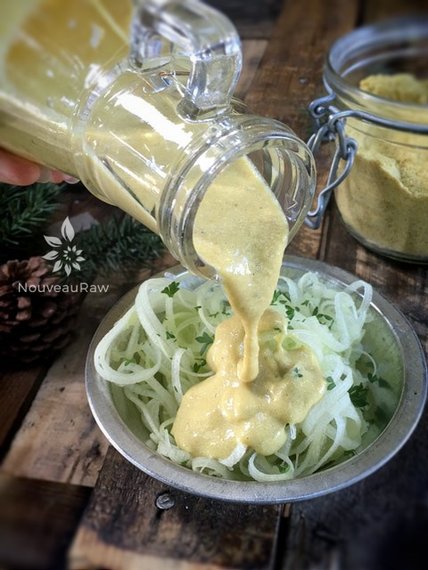

Homemade Vegan Cheese Sauce Powder

~ raw, vegan, gluten-free ~
I was inspired to play around with this recipe that came from the book, The Complete Guide to Vegan Food Substitutions. I made some dramatic changes to suit my needs. The end result… pretty darn incredible.
This recipe is one that you can make in advance and keep stored in the fridge or freezer for several months. Then when you are in need of an instant “cheese” sauce, all you have to do is add this powder and water together in the blender and presto! “Cheese” sauce extraordinaire!
One ingredient that I switched out was corn starch. After a LOT of research, I found some Konjac flour. I am throwing a new ingredient out to many of you… and well, to myself too.
Konjac flour is a powdered, processed form of the root of the konjac plant that is native to several regions in Asia; the flour has an appearance similar to standard white flour or cornstarch. One of the most common uses for konjac flour is as a thickening agent because the flour consists almost completely of water-soluble fiber that can be easily digested and contains no glutens or sugars, unlike other thickening agents. (source and more reading)
Konjac flour is not a raw product. I haven’t tested any other forms of thickeners with this particular recipe, so I can’t really comment on them until then. If you wish to sub it out, you could play around with sunflower lecithin powder. I thought of psyllium but worried about the overall texture that it would give, but who knows; it just might work too.
This sauce is great for dipping chips, drizzling over veggies, or would even be great tossed with zucchini noodles. I hope that you find inspiration through this recipe. amie sue
Yields: 5 cups = 20 (1/4 cup servings)
- 3 cups almonds or cashews, soaked & dehydrated
- 1 3/4 cups nutritional yeast
- 5 tsp Konjac flour
- 2 Tbsp garlic powder
- 3 Tbsp onion powder
- 1 Tbsp Himalayan pink salt
- 1 Tbsp ground mustard seed
- 2 tsp paprika
- 1 tsp dried parsley
- 1 tsp dried minced onion
- 1/2 tsp turmeric
- 1/2 tsp black pepper
- 1/4 tsp cayenne pepper
- 1/4 tsp cumin
Preparation:
Dry “cheese” powder:
- After soaking and dehydrating the almonds or cashews, grind them in a dry blender in batches. Be careful that you don’t over-process them. This will cause them to release their natural oils and would cause clumping.
- Make sure your end amount of flour equals 3 cups of flour.
- Place the groundnut flour and the remaining ingredients in a sealable container (at least 5 cup capacity).
- Seal and shake vigorously to mix.
- Store refrigerated or in the freezer for up to a few months.
Making the “cheese” sauce:
- In the blender combine a 1:2 ratio powder to water or dairy-free milk. I used the Vitamix blender and put the setting on “warm,” letting it run the full cycle. This will warm the sauce making it completely ready to pour over the veggies or noodles. The warmth helps to activate the konjac flour.
- Place your hand on the side of your blender while it runs to assure that it doesn’t get too hot and cook the sauce.
- Use sauce immediately. You can always thin out if you want to.

When ready blend with water or nut milk…and pour over your favorite veggies.
© AmieSue.com